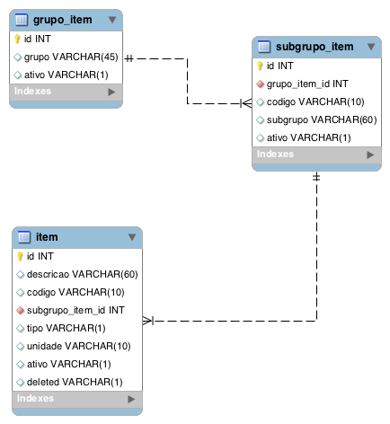
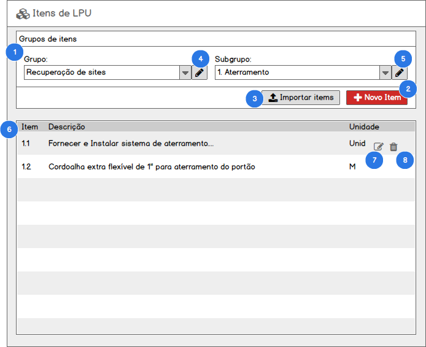
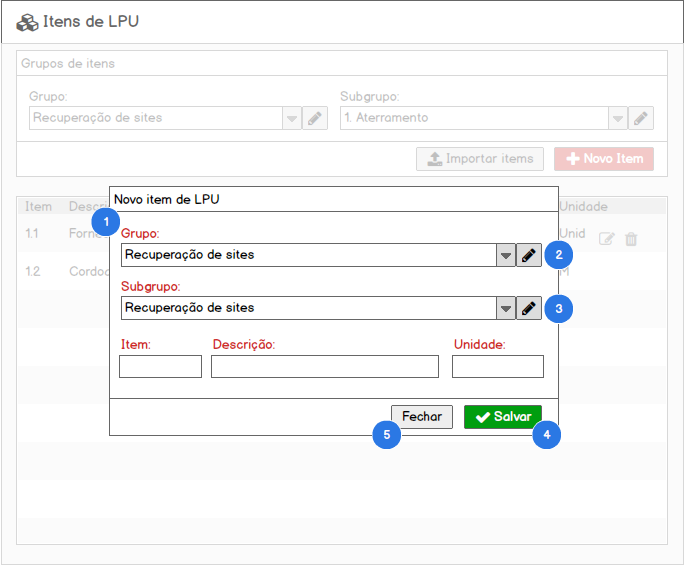

Funcionalidade: Itens de LPU#
Como usuário com perfil (1. Diretor, 2. Gerente) no SisGeop, eu quero gerenciar os itens de LPU que a JTEL oferece aos seus clientes.
Modelo de dados#

Tabelas relacionadas#
| Tabela | Descrição |
|---|---|
| item | Armazena os itens (produtos e serviços) ofertados |
| subgrupo_item | Armazena os registros de subgrupos de itens |
| grupo_item | Armazena os registros de grupos de itens |
Listar Itens de LPU#
Contexto
- Para acessar essa funcionalidade o usuário acessa o menu Cadastrar > Itens de LPU;
- O sistema deverá exibir a lista de todos os registros cadastrados quando o usuário entrar na tela;
PROTÓTIPO#

1. FILTRO DE ITENS DE LPU#
QUANDO o usuário acessar selecionar as opções nos campos Grupo de item e Subgrupo de item
ENTÃO o sistema exibirá a relação de itens de LPU vinculados ao Grupo e Subgrupo selecionados
2. NOVO ITEM DE LPU#
QUANDO o usuário clicar no botão Novo item
ENTÃO o sistema aciona o caso Incluir item de LPU
3. IMPORTAR ITENS DE LPU#
QUANDO o usuário clicar no botão Importar itens
ENTÃO o sistema aciona a funcionalidade Importar itens de LPU
4. GERENCIAR GRUPOS DE ITENS#
QUANDO o usuário clicar no botão Gerenciar grupos de itens
ENTÃO o sistema aciona a funcionalidade Gerenciar grupos de itens
5. GERENCIAR SUBGRUPOS DE ITENS#
QUANDO o usuário clicar no botão Gerenciar subgrupos de itens
ENTÃO o sistema aciona a funcionalidade Gerenciar subgrupos de itens
6. LISTA DE ITENS DE LPU#
QUANDO o usuário selecionar um Grupo de itens e um Subgrupo de itens
ENTÃO o sistema carrega a relação de itens de LPU vinculados ao Grupo e Subgrupo selecionados
7. EDITAR ITEM DE LPU#
QUANDO o usuário clicar na opção Editar
ENTÃO o sistema aciona o caso Editar item de LPU
8. EXCLUIR ITEM DE LPU#
QUANDO o usuário clicar na opção Excluir
ENTÃO o sistema aciona o caso Excluir item de LPU
Incluir Item de LPU#
Contexto
- Para acessar essa funcionalidade o usuário aciona o botão Novo item de LPU a partir da tela de listagem de itens de LPU;
- O sistema deverá exibir o formulário para a criação de um novo item de LPU;
PROTÓTIPO#

1. FORMULÁRIO DE INCLUSÃO DE ITEM DE LPU#
QUANDO o usuário acionao o botão Novo item a partir da tela de listagem de itens de LPU
ENTÃO o sistema exibe o formulário de inclusão de item de LPU
E seleciona o Grupo de item selecionado no filtro da listagem de itens de LPU
E seleciona o Subgrupo de item selecionado no filtro da listagem de itens de LPU
2. GERENCIAR GRUPOS DE ITEM#
QUANDO o usuário clicar no botão Gerenciar grupos de itens
ENTÃO o sistema aciona a funcionalidade Gerenciar grupos de itens
3. GERENCIAR SUBGRUPOS DE ITEM#
QUANDO o usuário clicar no botão Gerenciar subgrupos de itens
ENTÃO o sistema aciona a funcionalidade Gerenciar subgrupos de itens
4. SALVAR ITEM DE LPU#
QUANDO o usuário clicar no botão Salvar
ENTÃO o sistema valida o preenchimento do formulário
E Salva os dados preenchidos no formulário criando um novo registro de contrato no banco de dados
E Exibe a mensagem "Registro incluído com sucesso" e reseta os campos de descrição dos itens
4.1 Formulário inválido#
CASO o formulário não esteja devidamente preenchido
ENTÃO o sistema apresenta a seguinte mensagem "Os campos destacados são de preenchimento obrigatório"
E destaca os campos que precisam ser preenchidos para o usuário
4.2 Código do item duplicado#
CASO o código do item informado no registro que o usuário estiver inserindo já esteja em utilização por outro item no mesmo subgrupo
ENTÃO o sistema exibirá a seguinte mensagem "Já existe um item com este código"
E interromperá a inserção do registro do contrato.
5. CANCELAR INCLUSÃO DE ITEM DE LPU#
QUANDO o usuário clicar no botão Cancelar
ENTÃO o sistema cancela a inclusão do item de LPU e fecha a janela de inclusão de item
OBRIGATORIEDADE DE CAMPOS#
O sistema deverá exibir de forma destacada os campos do formulário que são de preenchimento obrigatório
Editar Item de LPU#
Contexto
- Para acessar essa funcionalidade o usuário aciona o botão Editar a partir da tela de listagem de itens de LPU;
- O sistema deverá exibir o formulário para a edição de um item de LPU carregando todos os dados cadastrados para o contrato nos respectivos campos de edição do formulário;
PROTÓTIPO#
1. FORMULÁRIO DE EDIÇÃO DE ITEM DE LPU#
QUANDO o usuário aciona o botão Editar na tela de listagem de itens de LPU
ENTÃO o sistema exibe o formulário de edição de itens de LPU com os dados do item selecionado carregados no formulário para edição.
2. GERENCIAR GRUPOS DE ITEM#
QUANDO o usuário clicar no botão Gerenciar grupos de itens
ENTÃO o sistema aciona a funcionalidade Gerenciar grupos de itens
3. GERENCIAR SUBGRUPOS DE ITEM#
QUANDO o usuário clicar no botão Gerenciar subgrupos de itens
ENTÃO o sistema aciona a funcionalidade Gerenciar subgrupos de itens
4. SALVAR ITEM DE LPU#
QUANDO o usuário clicar no botão Salvar
ENTÃO o sistema valida o preenchimento do formulário
E Salva os dados preenchidos no formulário criando um novo registro de contrato no banco de dados
E Exibe a mensagem "Registro alterado com sucesso" e reseta os campos de descrição dos itens
4.1 Formulário inválido#
CASO o formulário não esteja devidamente preenchido
ENTÃO o sistema apresenta a seguinte mensagem "Os campos destacados são de preenchimento obrigatório"
E destaca os campos que precisam ser preenchidos para o usuário
4.2 Código do item duplicado#
CASO o código do item informado no registro que o usuário estiver inserindo já esteja em utilização por outro item no mesmo subgrupo
ENTÃO o sistema exibirá a seguinte mensagem "Já existe um item com este código"
E interromperá a inserção do registro do contrato.
5. CANCELAR EDIÇÃO DE ITEM DE LPU#
QUANDO o usuário clicar no botão Cancelar
ENTÃO o sistema sai da tela de edição de item de LPU e retorna para a tela de listagem de itens de LPU
OBRIGATORIEDADE DE CAMPOS#
O sistema deverá exibir de forma destacada os campos do formulário que são de preenchimento obrigatório
Excluir Item de LPU#
Contexto
- Para acessar essa funcionalidade o usuário aciona o botão Excluir a partir da tela de listagem de itens de LPU;
- A exclusão de um usuário deverá ser uma exclusão Lógica de forma que o registro da despesa nunca será fisicamente excluído do banco de dados;
QUANDO o usuário acionar o botão Excluir em uma linha na lista de itens de LPU
ENTÃO o sistema exibe uma janela de confirmação com a mensagem "Deseja realmente excluir o registro selecionado?"
QUANDO o usuário confirmar a exclusão do registro
ENTÃO o sistema efetua a desativação Lógica do registro do item de LPU
E atualiza a lista de itens de LPU de acordo com o filtro previamente definido pelo usuário